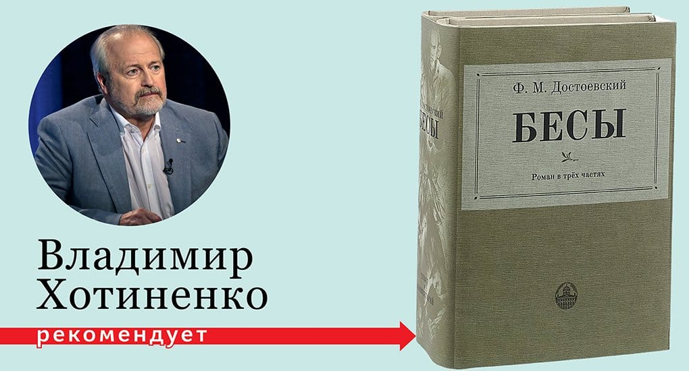

Ф.М. Достоевский
Роман
достойный
вашего чтения.
шестой роман Фёдора Михайловича Достоевского, изданный в 1871—1872 годах.
Один из наиболее политизированных романов Достоевского.
Ф.М. Достоевский
Роман
достойный
вашего чтения.
шестой роман Фёдора Михайловича Достоевского, изданный в 1871—1872 годах.
Один из наиболее политизированных романов Достоевского.
Открой для себя
Лучшее произведение
«Бесы» входят в ряд русских антинигилистических романов, в котором критически разбираются идеи левого толка, в том числе и атеистические, занимавшие умы молодёжи того времени.
Главные герои
Главные герои напоминают Ньюта и Дамблдора из 'фантастических тварей', а это еще одна причина начать читать роман.
В процессе написания значительно усложнились идея и сюжет произведения. Полемика героев-идеологов продолжала линию, начатую ещё в романе «Преступление и наказание». «Бесы» стали одним из значительнейших произведений Достоевского — романом-предсказанием, романом-предупреждением. Даже Владимир Хотиенко рекомендует.
Мы в соцсетях